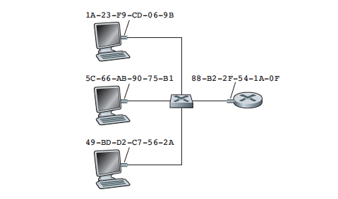

October 20th Notes
Switched Local Area Networks
Link-Layer Addressing and ARP
- A link-layer address is variously called a LAN address, a physical address, or a MAC address

- MAC address is 6 bytes long, giving 2^48 possible MAC addresses
- If a sending adapter wants all the other adapters on the LAN to receive and process the frame it is about to send it inserts a special MAC broadcast address into the destination address field of the frame
- Address Resolution Protocol (ARP) is used to translate between network-layer addresses and link-layer addresses
- Each host and router has an ARP table in its memory, which contains mappings of IP addresses to MAC addresses.